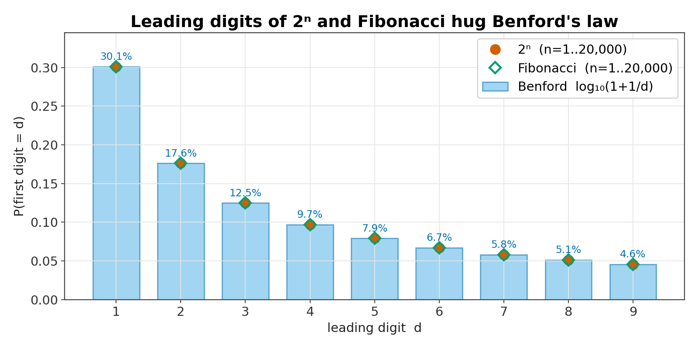
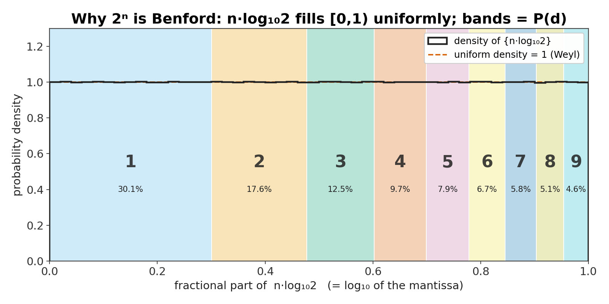
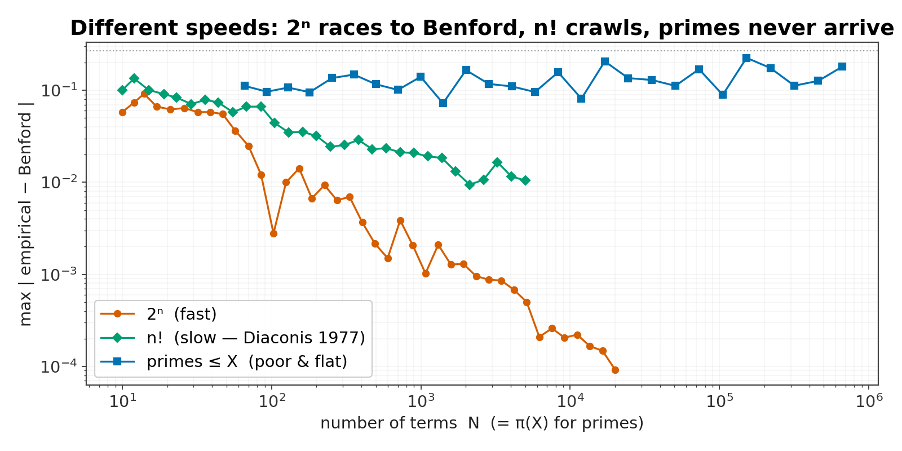
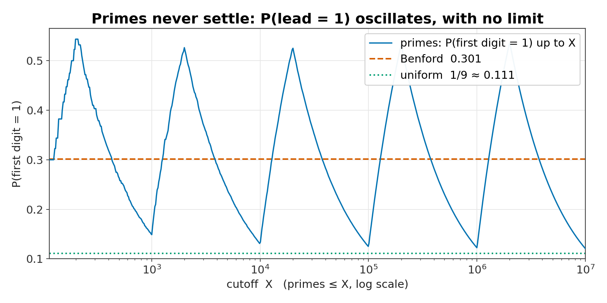
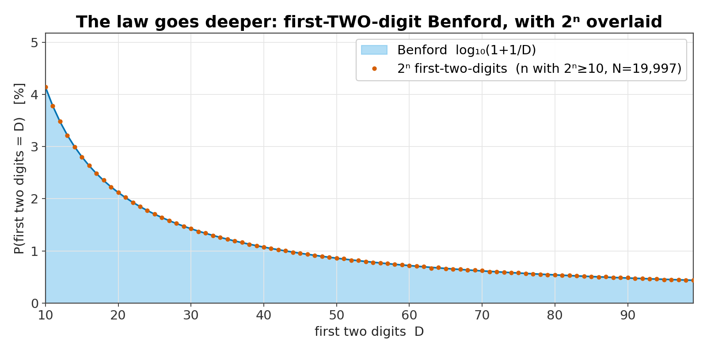

Benford’s law: why the digit 1 is not fair
Collect a big pile of real-world numbers — river lengths, stock prices, country areas, the powers of two — and look only at each one’s leading digit. You might expect each of 1–9 about a ninth of the time. Instead 1 shows up about 30% of the time and 9 barely 4.6%. That lopsidedness is Benford’s law. Below you can watch it appear, see exactly why it is a theorem for some sequences — and exactly where the “law” quietly lies.
1A pattern that feels impossible
In 1881 the astronomer Simon Newcomb noticed that the front pages of logarithm tables — the ones starting with a 1 — were grubbier and more worn than the back pages. People were looking up numbers beginning with 1 far more often than numbers beginning with 9. He guessed a formula and moved on. In 1938 the physicist Frank Benford rediscovered it and tested it against 20,229 numbers from twenty wildly different tables — river areas, populations, physical constants, street addresses, even numbers plucked from magazine articles. The leading digits all leaned the same way.
The claim is precise. For a Benford quantity the probability that the first significant digit is d is
P(first digit = d) = log10(1 + 1/d)
so 1 wins big and the digits taper off smoothly to 9:

2Pour numbers in and watch
Pick a source of numbers and a sample size. The bars are what you actually get; the dark notches are Benford’s prediction. Some sources snap onto the curve; some refuse. Every digit here is computed in your browser from exact integers (big-integer arithmetic, no rounding), the same way the verifier does.
Try it: 2ⁿ, 3ⁿ and Fibonacci lock onto Benford and tighten as you drag N right. n! obeys it too but converges in slow motion. countries (real land areas) is a good but visibly wobbly fit. And primes, uniform and normal simply do not obey it — for instructive reasons (§4). The same machinery gives the first-two-digit law: 90 finer bands, still log10(1 + 1/D).
3Why it is a theorem (for some sequences)
The leading digit of a number x is decided entirely by the fractional part of log10x. Write log10x = (whole part) + (fraction). The leading digit is d exactly when that fraction lands in the interval [log10d, log10(d+1)), whose width is log10(1+1/d) — the Benford number. So a sequence is Benford precisely when the fractional parts of its logarithms fill the interval [0,1) evenly. That property has a name: equidistribution mod 1.
For the powers of two, log10(2ⁿ) = n·log102. Because log102 is irrational, Weyl’s equidistribution theorem (1916) guarantees that the fractional parts of n·log102 sweep [0,1) perfectly uniformly. Drop those points in yourself and watch the nine Benford-width bands fill in proportion:
That is the whole proof in a picture: irrational slope ⇒ uniform fill ⇒ each digit-band collects a share equal to its width ⇒ Benford. The same argument works for any a·rⁿ with log10r irrational, and for Fibonacci (which grows like φⁿ/√5, so log10φ is the slope). Factorials are Benford too, but that is a genuinely harder theorem — Diaconis (1977) — because log10(n!) is a sum of growing terms, not a clean multiple of one irrational. Don’t conflate the two difficulties.
You can check the engine of the proof right here. For every power of two we compute its leading digit two independent ways — the exact decimal string of the big integer, and the prediction ⌊10frac(n·log102)⌋ from the logarithm. If the equidistribution story is right, they must always agree:


4Where the “law” lies
Benford’s law is famous enough to be misused. It is not universal, and three honest counter-cases sharpen what it actually requires.
Primes look like they obey it — then never settle
Set the source above to primes and drag the cutoff: the fit is poor and it keeps changing. That is not a sampling artifact. Under natural density the fraction of primes with a given leading digit has no limit at all — it oscillates forever, because the leading digit of the cutoff itself never settles. A clean Benford value appears only if you switch to a weighted (logarithmic or analytic) density — Whitney (1972), Cohen–Katz (1984). And for an honest finite count, Luque–Lacasa (2009) showed the primes ≤ N follow a size-dependent law that drifts toward the uniform distribution, not toward Benford. So primes are the perfect cautionary tale: a suggestive-looking fit with no theorem underneath.

Uniform, normal, and “narrow” data are not Benford
Roll uniform or normal above and the bars go flat-ish or bell-shaped — not Benford. The reason is the same equidistribution lens: Benford needs log10x to sweep across several orders of magnitude. Data trapped in a narrow band — adult heights (150–200 cm), IQ scores, body temperatures — can’t do that, so they fail. Even some tidy math sequences fail: √n and 1/n are not Benford. Benford-ness is special, not generic.
And “assigned” numbers are off the table
Phone numbers, ZIP codes, invoice IDs with fixed prefixes, dates — these are labels, not measured magnitudes, and have no reason to be Benford.
So why does so much real data fit? Honestly: no theorem guarantees any particular dataset is Benford. The best explanation is about mixtures. Pinkham (1961) showed that if a digit law is to be independent of your units (metres vs. feet), it can only be Benford. Hill (1995) sharpened this to base-invariance and proved a central-limit-style result: pull samples from many randomly chosen distributions and mix them, and the significant digits converge to Benford. Heterogeneous, multi-source, many-orders-of-magnitude data — which is most real data — tends to qualify. But applying that to a given table is a modelling judgement, not a proof.
5Deeper digits, same idea
The equidistribution argument doesn’t stop at the first digit. The probability the first two digits form the number D (from 10 to 99) is again log10(1 + 1/D). Flip the view toggle in §2 to first two digits to see the 90-band version emerge for 2ⁿ. A consequence worth knowing: the second digit is much flatter than the first (0 at ~12.0% down to 9 at ~8.5%), and its average value under Benford is about 4.187 — a number forensic tests lean on.

6Using it — and misusing it
Because honest, multi-scale accounting data tends to be Benford while many fabricated figures are not, digit tests are a real screening tool in forensic accounting and tax auditing (Nigrini). The rule is modest: a deviation flags a dataset for a closer look. It is never proof — conformance doesn’t prove honesty (a careful faker can match the curve), and the data has to be Benford-expected to begin with.
Election fraud detection: a cautionary tale, not a success story
Using Benford’s law on vote counts is widely regarded by specialists as unreliable. Precincts are deliberately similar in size, so vote tallies span a narrow range — exactly the condition under which Benford shouldn’t apply. Deckert, Myagkov & Ordeshook (2011) found the first-digit test “essentially equivalent to a toss of a coin,” and even Mebane — who proposed the second-digit version — agrees the first-digit test is inappropriate for vote counts and that deviations usually reflect ordinary factors (district size, strategic voting, turnout) rather than fraud. Treat confident “Benford proves the election was stolen” claims with great suspicion.
7What we computed vs. what we cite
House rule of this lab: separate what the code actually checks from what we take on the literature’s word. Two gates back this page — verify.py (23 checks, standard-library Python) and test_core.mjs (16 cross-checks of the in-browser engine against Python). The histogram code you just used is the same engine the tests pin down.
Re-computed here (two independent ways where it matters)
- The Benford table and its sums; the first-two-digit law marginalizes exactly back to the first-digit law.
- 2ⁿ is Benford: for all n = 1…20,000 the exact-string digit and the logarithm prediction agree (0 disagreements), and the histogram → Benford (max deviation 0.00009).
- Convergence: distance to Benford falls across the checkpoints N = 100, 1,000, 5,000, 20,000 — a downward trend, though it wobbles from step to step; Fibonacci behaves identically; n! converges but measurably slower.
- Primes are a poor, cutoff-dependent fit (prime counts match π(x) = 9,592 / 78,498 / 664,579); uniform and normal samples are not Benford.
- The shipped 244-country area dataset: χ² = 5.87 (8 df) — does not reject Benford.
Cited, not re-proved
- Weyl’s equidistribution theorem (1916) and the leading-digit equivalence — the engine of every proof here.
- Diaconis (1977) for factorials (and the equidistribution proofs); Pinkham (1961) for scale-invariance.
- Hill (1995): base-invariance and the random-mixture theorem — the best explanation for real-world ubiquity.
- The exact primes dichotomy (no natural-density limit; Benford only under weighted density) — Whitney (1972), Cohen–Katz (1984), Raimi; the drift-to-uniform — Luque–Lacasa (2009).
- That any particular real dataset is Benford is empirical, never guaranteed.
§Sources
Newcomb, S. (1881). Amer. J. Math. 4(1), 39–40. · Benford, F. (1938). “The Law of Anomalous Numbers.” Proc. Amer. Philos. Soc. 78(4), 551–572. · Weyl, H. (1916). Math. Ann. 77, 313–352. · Pinkham, R. S. (1961). Ann. Math. Statist. 32(4), 1223–1230. · Diaconis, P. (1977). “The distribution of leading digits and uniform distribution mod 1.” Ann. Probab. 5(1), 72–81. · Raimi, R. (1976). “The first digit problem.” Amer. Math. Monthly 83(7), 521–538. · Whitney, R. E. (1972). Amer. Math. Monthly 79(2), 150–152. · Cohen, D. & Katz, T. (1984). J. Number Theory 18, 261–268. · Hill, T. P. (1995). “A statistical derivation of the significant-digit law.” Statist. Sci. 10(4), 354–363; and “Base-invariance implies Benford’s law,” Proc. AMS 123(3), 887–895. · Luque, B. & Lacasa, L. (2009). Proc. R. Soc. A 465(2107), 2197–2216. · Nigrini, M. J. (2012). Benford’s Law. Wiley. · Deckert, Myagkov & Ordeshook (2011), with Mebane reply, Political Analysis 19(3). · Berger, A. & Hill, T. P. (2015). An Introduction to Benford’s Law. Princeton UP. · Country areas: CIA World Factbook (public domain) via the CC0 factbook.json mirror.